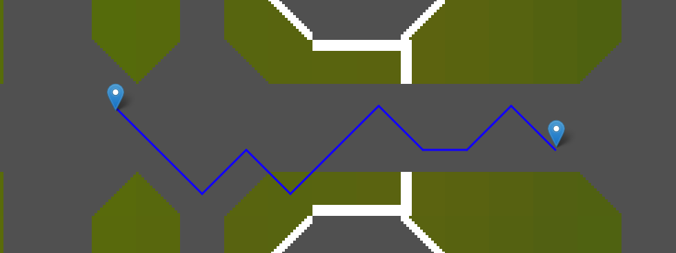
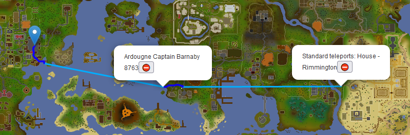

OSRS Navigator

OSRS Live Demo
Pfade

Zustände einer Position

Diagonales Laufen

Relevante Projekte
Anforderungen
- öffentlicher Dienst
- Client-agnostisch
- Bearbeitet Navigationsanfragen
- Alle Bewegungen unterstützen
- Ausschließen von Bewegungen unterstützen
- Effizient
Datenquellen
- Begehbare Positionen
- aus Cache-Daten
- Teleportationen
- aus WikiMaps
- Transportwege
- aus WikiMaps
- und aus Shortest Path
Projektstruktur
Navigationsdatensatz
movement.csv
#x,y,z,northBlocked,eastBlocked,southBlocked,westBlocked
3685,3393,0,false,false,false,false
teleports.csv
#x,y,z,duration,title
2653,3443,0,4,Combat bracelet: Ranging Guild
transport.csv
#fromX,fromY,fromZ,toX,toY,toZ,duration,title
3828,9463,0,3829,3061,0,1,Climb-up Staircase 5269
Movement Dumper
- Cache-Daten
- Begehbarkeit einer Position
- Bestimmung erreichbarer Positionen
Cache-Daten
Begehbarkeit laut WikiMaps
| Location #getType |
Location #getOrientation |
Begehbarkeit |
|---|---|---|
| 0 | 0 | Westen blockiert |
| 1 | Norden blockiert | |
| 2 | Osten blockiert | |
| 3 | Süden blockiert | |
| 2 | 0 | Nordwesten blockiert |
| 1 | Nordosten blockiert | |
| 2 | Südosten blockiert | |
| 3 | Südwesten blockiert | |
| 9 | beliebig | Position blockiert |
| 10 | Objekt- Orientiereung |
Objekt blockiert Position(en) |
| sonst | beliebig | begehbar |
Reverse-Engineering
- Untersuchung von
Location#getType - Untersuchung von
ObjectDefintion
Location#getType
List<Position> positionsWithLocType22Only = regions.stream()
.flatMap(region −> region.getLocations().stream())
.collect(Collectors.groupingBy(Location::getPosition))
.entrySet().stream()
.filter(posWithLocs −> posWithLocs.getValue().size() == 1)
.filter(posWithLocs −> posWithLocs.getValue().get(0).getType() == 22)
.map(Map.Entry::getKey)
.collect(Collectors.toList());
ObjectDefinition#getInteractType
List<Position> posWithType10Interact0only = regions.stream()
.flatMap(region −> region.getLocations().stream())
.collect(Collectors.groupingBy(Location::getPosition))
.entrySet().stream()
.filter(posWithLocs −> posWithLocs.getValue().size() == 1)
.map(posWithLocs −> posWithLocs.getValue().get(0))
.filter(loc −> loc.getType() == 10)
.filter(loc −> objectManager.getObject(loc.getId()).getInteractType() == 0)
.map(Location::getPosition)
.collect(Collectors.toList());
Bestimmung Begehbarkeit
| Typen | Beschreibung | Blockiert |
|---|---|---|
| 0 | Wand | Blockiert Rand, falls Objekt blockiert |
| 1, 3 | Säule an Ecke | Nein |
| 2 | Eckwand | Blockiert Ränder, falls Objekt blockiert |
| 4, 5 | Wanddekorationen | Nein |
| 6, 7, 8 | Nicht erkennbar | Nein |
| 9 | Diagonale Wand | Blockiert, falls Objekt blockiert |
| 10, 11 | Objekte | Blockiert, falls Objekt blockiert |
| 12 - 21 | Dachziegel | Blockiert, falls Objekt blockiert |
| 22 | Bodendekoration | Blockiert, falls Objekt blockiert |
Bestimmung Objekt blockiert
fn objectOnLocationIsBlocking(location):
object = Get ObjectDefinition with id location.getId()
If location.getType() == 22:
Return object.getInteractType() == 1
Else:
Return oject.getInteractType() != 0
Bestimmung erreichbarer Positionen
- Nicht alle begehbare Positionen sind erreichbar
- Undefinierte Positionen sind begehbar
- Isolierte Betrachtung jeder Position nicht möglich
- Lösung: Breitensuche

Bestimmung erreichbarer Positionen
fn extractMovementData:
Read teleports and transports
For each unvisited teleport:
bfs(teleport destination)
Return all explored positions
fn bfs(position):
Start breadth-first-search from position
If any teleport destinations are found:
Mark teleport as visited
Return explored positions
fn neighbour(position):
Find positions which can be reached from position
by walking or by taking transports
Return positions
Pathfinder backend
- Bestimmt kürzeste Wege
- Generiert Graphen aus Navigationsdatensatz
Bestimmung kürzester Wege
- Dijkstra's Algorithmus
- Betrachtet Teleportationen nur als ersten Schritt
- Nutzt eigene Klasse PriorityQueueTieByTime

Generierung Graphenstruktur
pathfinder frontend live demo
Performanz von movement dumper
| Laufzeit | ~200 Sekunden |
| Arbeitsspeicher-Auslastung | ~1,3 GB |
Größe von Navigationsdatensatz
| Erreichbare Positionen | 971.791 |
| Teleportationen | 197 |
| Transportwege | 6.576 |
Performanz pathfinder backend
| Startzeit | ~9 Sekunden |
| Arbeitsspeicher-Auslastung | 2,8 GB |
| Pfadlänge | Zeit zum Berechnen | Erforschte Positionen |
|---|---|---|
| 0 | 0ms | 0 |
| 5 | 1ms | 460 |
| 20 | 113ms | 52.767 |
| 50 | 894ms | 319.378 |
| 100 | 2365ms | 731.347 |
| 200 | 3696ms | 915.318 |
| 500 | 3700ms | 970.988 |
Fehlende Bereiche
Beispiele von Pfaden

Beispiele von Pfaden
Beispiele von Pfaden
Beispiele von Pfaden
Zusammenfassung
- movement dumper
- Gemischter Datensatz für Teleportationen und Transportwege
- Reverse-Engineering
- Breitensuche
- pathfinder backend
- Generiert Graphenstruktur
- Djikstra's Algorithmus
- pathfinder frontend
- Basiert auf bestehende Webapplikation
- Tätigt Navigationsanfragen
- Visualisiert Pfade
Ausblick
- Pathfinder backend öffentlich bereitstellen
- Plattform vieler kreativer Projekte
- Automatische Generierung des Navigationsdatensatzes
- Teleportations- und Transportdaten verbessern
- Weitere Algorithmen zur Pfadermittlung prüfen